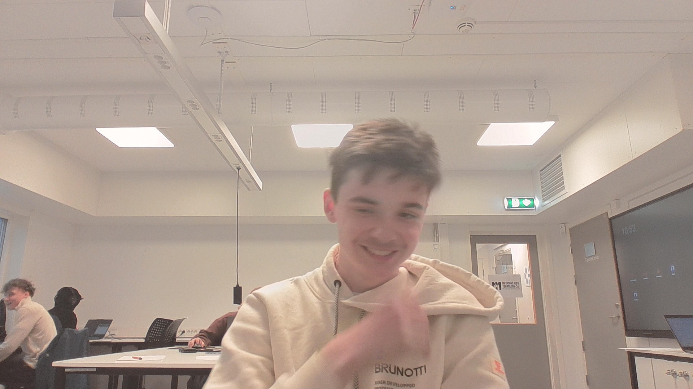

Eg heiter Dennis, eg er 16 år gammal. Under meg ser du eit bilde av meg.
 7Eg er 16 år og studerer på Stord VGS på IMA linja. Dette er eit bilde av skulen min.
Eg bor i Fitjar og tar buss til skulen kvar dag. Bussen går 06:58. Og bussen heim fra skulen går 15:08.